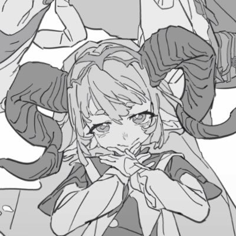

kiri
@0TwT012
痛苦就是痛苦，我的痛苦一直被没有被妥善的放置。
那些伤害过我的人，的事，的话，其实我一直都没过去，过去的事依旧是大事，我还是会流泪，会崩溃，会问到底为什么。
我不是不值得，不是不够好，但是我还是遇到这些痛苦，这些狠狠伤害我在我命运里深深划过一道伤口的刀子。我没办法和他们和解，夜深人静的时候不能，现在不能，以后也不能。我会一直记得，我知道，它们是我生命里的一部分，喋喋不休的，痛不欲生的，百思不得其解的，但是我生命里的一部分。
很长一段时间，其实我觉得我已经释怀了，但更多时候，我用眼泪代替。和过去的痛苦释怀，本来就是无解的命题。
向前看就好了，不去想就好了，道理我都能明白，但这些伤疤一直顽强跟着我，甩不掉，接受不了。
这个世界有时候太尖锐了吧，让淡淡的细密的悲伤贯穿我这个脆弱的爱哭的小女孩的生命。这是我必须要经历的人生命题吗？痛苦也好，苦难也好，眼泪也好，不理解也好，就这样带着这些继续前进，是成长的标志吗？
可是这些东西好像没有让我成长，没有让我变得更加坚强，也没有让我学会怎么释怀。我的眼泪，情绪，苦闷，心脏痛痛的时刻，都献给了这些过去的苦难。
但是我没有办法，我只能对自己说，幸好，都过去了。